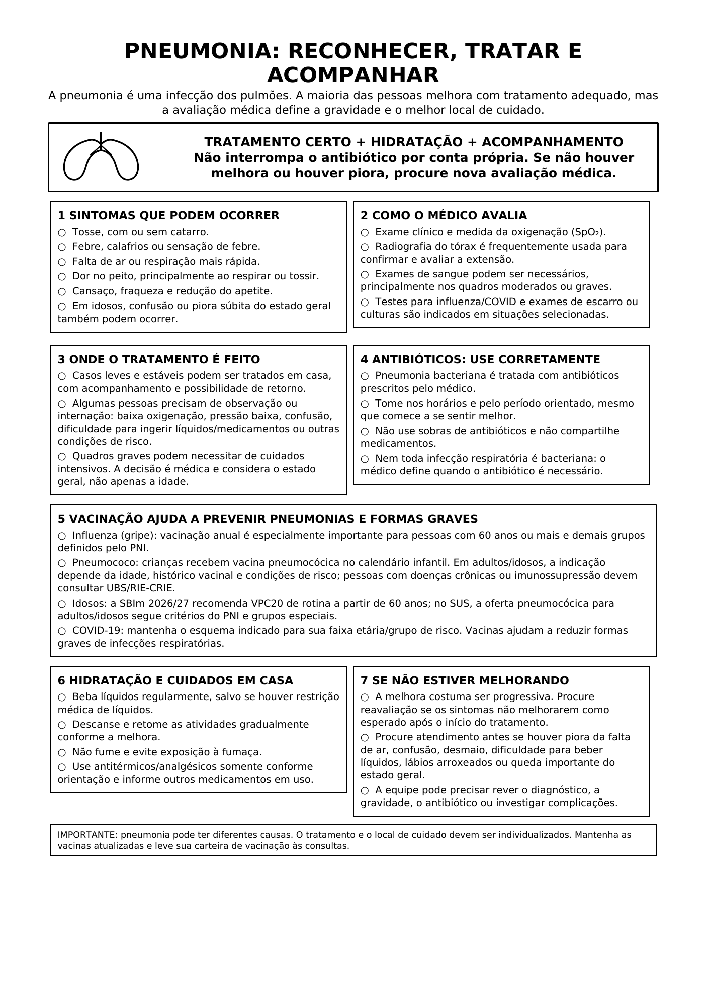

Pneumonia: reconhecer, tratar e acompanhar

Ler o texto do infográfico
A pneumonia é uma infecção dos pulmões. A maioria das pessoas melhora com tratamento adequado, mas a avaliação médica define a gravidade e o melhor local de cuidado.
Tratamento certo + hidratação + acompanhamento. Não interrompa o antibiótico por conta própria. Se não houver melhora ou houver piora, procure nova avaliação médica.
1. Sintomas que podem ocorrer
- Tosse, com ou sem catarro.
- Febre, calafrios ou sensação de febre.
- Falta de ar ou respiração mais rápida.
- Dor no peito, principalmente ao respirar ou tossir.
- Cansaço, fraqueza e redução do apetite.
- Em idosos, confusão ou piora súbita do estado geral também podem ocorrer.
2. Como o médico avalia
- Exame clínico e medida da oxigenação (SpO₂).
- Radiografia do tórax é frequentemente usada para confirmar e avaliar a extensão.
- Exames de sangue podem ser necessários, principalmente nos quadros moderados ou graves.
- Testes para influenza/COVID e exames de escarro ou culturas são indicados em situações selecionadas.
3. Onde o tratamento é feito
- Casos leves e estáveis podem ser tratados em casa, com acompanhamento e possibilidade de retorno.
- Algumas pessoas precisam de observação ou internação: baixa oxigenação, pressão baixa, confusão, dificuldade para ingerir líquidos/medicamentos ou outras condições de risco.
- Quadros graves podem necessitar de cuidados intensivos. A decisão é médica e considera o estado geral, não apenas a idade.
4. Antibióticos: use corretamente
- Pneumonia bacteriana é tratada com antibióticos prescritos pelo médico.
- Tome nos horários e pelo período orientado, mesmo que comece a se sentir melhor.
- Não use sobras de antibióticos e não compartilhe medicamentos.
- Nem toda infecção respiratória é bacteriana: o médico define quando o antibiótico é necessário.
5. Vacinação ajuda a prevenir pneumonias e formas graves
- Influenza (gripe): vacinação anual é especialmente importante para pessoas com 60 anos ou mais e demais grupos definidos pelo PNI.
- Pneumococo: crianças recebem vacina pneumocócica no calendário infantil. Em adultos/idosos, a indicação depende da idade, histórico vacinal e condições de risco; pessoas com doenças crônicas ou imunossupressão devem consultar UBS/RIE-CRIE.
- Idosos: a SBIm 2026/27 recomenda VPC20 de rotina a partir de 60 anos; no SUS, a oferta pneumocócica para adultos/idosos segue critérios do PNI e grupos especiais.
- COVID-19: mantenha o esquema indicado para sua faixa etária/grupo de risco. Vacinas ajudam a reduzir formas graves de infecções respiratórias.
6. Hidratação e cuidados em casa
- Beba líquidos regularmente, salvo se houver restrição médica de líquidos.
- Descanse e retome as atividades gradualmente conforme a melhora.
- Não fume e evite exposição à fumaça.
- Use antitérmicos/analgésicos somente conforme orientação e informe outros medicamentos em uso.
7. Se não estiver melhorando
- A melhora costuma ser progressiva. Procure reavaliação se os sintomas não melhorarem como esperado após o início do tratamento.
- Procure atendimento antes se houver piora da falta de ar, confusão, desmaio, dificuldade para beber líquidos, lábios arroxeados ou queda importante do estado geral.
- A equipe pode precisar rever o diagnóstico, a gravidade, o antibiótico ou investigar complicações.
Importante: pneumonia pode ter diferentes causas. O tratamento e o local de cuidado devem ser individualizados. Mantenha as vacinas atualizadas e leve sua carteira de vacinação às consultas.